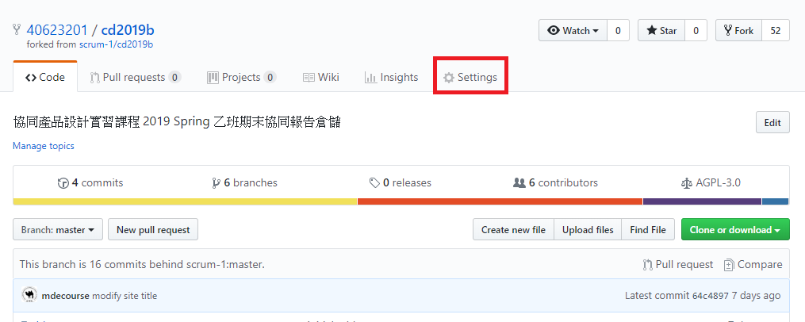
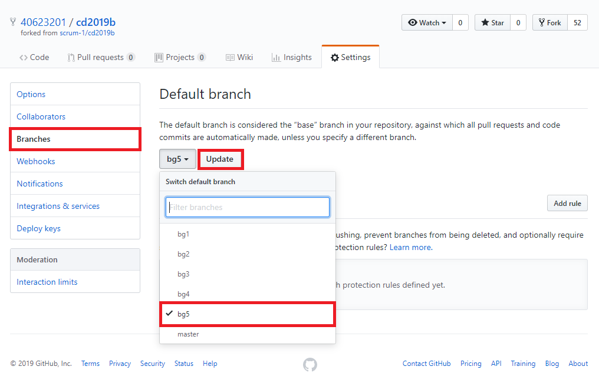
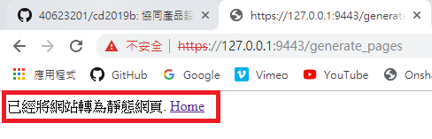
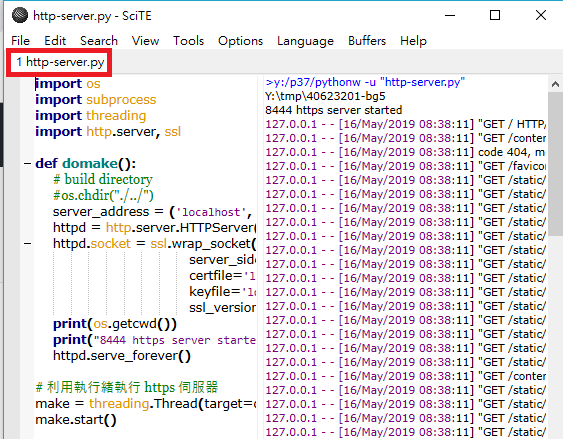

Pull request
1.到 Settings 更改 Branches，將分支改為 bg5 後 Update。


2.點選 New pull request。


4.輸入提交的訊息。

5.在 Pull requests 下點選 Merge pull request 再點選 Confirm merge 後完成。


6.Clone倉儲。

7.修改過後轉靜態網頁，再檢查動態網頁，確認無誤即可推送。


8.點選 New pull request。

9.選擇要合併的倉儲後，點選 Create pull request。

10.輸入提交的訊息後，則完成。

W17 << Previous